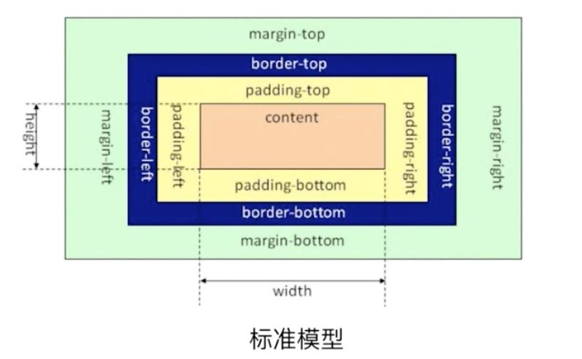

CSS样式 基础知识巩固笔记 发表于 2021-04-22 | 更新于 2021-05-30
| 阅读量:
CSS基础语法 1 2 3 格式：选择器{属性1：值1;属性2：值2;} 单位：px -> 像素(pixel), % -> 百分比 基本样式：width(宽),height(高),background-color(背景颜色)
样式引入 1 2 3 4 5 6 7 8 9 10 /* 内联(行内,行间)样式：在html标签上添加style属性来实现。*/ <div style="width:100px;height:100px;background-color:red;"></div> /* 内部样式：在<style>标签内添加的样式,可以复用代码。*/ <style> div{width:100px;height:100px;background-color:red;} </style> /* 外部样式：使用link引入.css文件或@import引入。 */ <!-- rel:引入的类型 href:引入的地址。 --> <link rel="stylesheet" href=""> <style> @import url(.css); </style>
颜色表示 1 2 3 4 5 6 7 8 9 10 11 12 13 14 单词表示法：red blue green yellow ... 十六进制表示法：#000000 #ffffff rgb三原色表示法：rgb(255,255,255); /* CSS3新增渐变效果 */ /* 渐变的0度在页面下边,正值按照顺时针旋转,负值按照逆时针旋转 */ background-image: linear-gradient(); 线型渐变 point || angle color percentage background-image: radial-gradient(); 径向渐变 point color percentage
背景样式 1 2 3 4 5 6 7 8 9 10 11 12 13 14 15 16 17 18 19 20 21 22 23 24 25 26 27 28 29 30 /* 背景颜色 */ background-color: ; /* 背景图片,默认水平垂直铺满背景图 */ background-image: url(); /* 背景图片的平铺方式 repeat-x repeat-y repeat(x,y都平铺,默认值) no-repeat */ background-repeat: ; /* 背景图片的位置 值(number:px %)：x y x: left center right y: top center bottom */ background-position: ; /* 背景图随滚动条的移动方式 scroll(默认值,背景位置按照当前元素进行偏移) fixed(背景位置按照浏览器进行偏移) */ background-attachment: ; /* 复合写法 */ background: red url() repeat 0 0; /* 顺序可随意 */ /* CSS3新增背景样式 复合样式:第一个是填充位置 第二个是裁切方式 */ background-size: ; 背景图的尺寸大小 cover覆盖 contain包含 background-origin: ; 背景图的填充位置 padding-box(默认) border-box content-box background-clip: ; 背景图的裁切方式 padding-box border-box(默认) content-box
边框样式 1 2 3 4 5 6 7 8 9 10 11 12 13 14 15 16 17 18 19 20 /* 边框的样式 solid : 实线 dashed : 虚线 dotted : 点线 */ border-style: ; /* 边框的大小 */ border-width: ; /* 边框的颜色 */ border-color: ; /* 单独设置某一边(中间是方向) left right top bottom */ border-top-style: ; border-right-width: ; border-left-color: ; /* 复合写法 */ border: 1px solid red; /* 顺序可随意 */
文字样式 1 2 3 4 5 6 7 8 9 10 11 12 13 14 15 16 17 18 19 20 21 22 font-family: ; /* 字体类型 */ font-size: ; /* 字体大小,默认16px,字体大小一般为偶数 */ font-weight: ; /* 字体粗细 bold(加粗 600~900) normal(默认 100~500) */ font-style: ; /* 字体样式 normal(默认) italic(斜体) oblique(斜体,没有倾斜属性的字体也可设置倾斜操作) */ color: ; /* 字体颜色 */ /* 复合写法 */ font: ; /* 最少要有两个值: size(size/line-height) family */ /* CSS3新增文字阴影,阴影的默认颜色和文字颜色相同,通过多逗号的方式分割,可以设置多阴影。 */ text-shadow: x y blur color,多阴影 /* CSS3新增字体图标 */ font-face可自定义Web字体嵌入到网页中。 应用场景： 1.可以非常方便的改变大小(font-size)和颜色(color)。 2.放大后不会失真。 3.减少请求次数和提高加载速度。 4.简化网页布局。 5.减少设计师和前端工程师的工作量。 6.可使用计算机没有提供的字体。
iconfont-阿里巴巴矢量图标库 icomoon-在线自定义字体图标
段落样式 1 2 3 4 5 6 7 8 9 10 11 12 13 14 15 16 17 18 19 20 21 22 23 24 /* 文本装饰 underline(下划线) line-through(删除线) overline(上划线) none(不添加任何装饰) 使用空格可添加多个文本修饰 */ text-decoration: ; /* 文本大小写(针对英文段落) lowercase(小写) uppercase(大写) capitalize(只针对首字母大写) */ text-transform: ; /* 文本缩进(首行缩进) em单位 1em等于当前字体大小 */ text-indent: ; /* 文本对齐方式 left right center justify(两端对齐) */ text-align: ; /* 定义行高 取值：number(px) scale(比例值,跟文字大小成比例) */ line-height: ; /* 定义字间距 */ letter-spacing: ; /* 定义词间距(针对英文) */ word-spacing: ; /* 强制折行(针对英文) */ word-break: break-all; /* 非常强烈的折行 */ word-wrap: break-word; /* 不是那么强烈的折行,会产生一些空白区域 */
CSS选择器 ID选择器 1 2 3 4 5 6 7 格式: css: #elem{} html: id = "elem" 注: 1.在一个页面中,ID值是唯一的。 2.命名规范,字母 _ - 数字(命名的第一位不能是数字)。 3.命名方式,驼峰式,下划线,短线式。
类选择器 1 2 3 4 5 6 7 8 格式: css: .elem{} html: class = "elem" 注: 1.class选择器是可以复用的。 2.可以添加多个class样式。 3.多个样式的时候,样式的优先级根据CSS决定,而不是class属性中的顺序。 4.标签+类的写法。
标签选择器 1 2 3 4 5 6 格式: css: div{} html: <div></div> 使用场景: 1.去掉某些标签的默认样式时。 2.复杂的选择器中,如：层次选择器。
群组选择器 1 2 3 4 格式: css: div , p , span{} 注: 可以通过逗号的方式,给多个不同的选择器添加统一的CSS样式,来达到代码的复用。
通配选择器 层次选择器 1 2 3 4 5 格式: 后代： M N {} 父子： M > N {} 兄弟： M ~ N {} 当前M下面所有兄弟N标签 相邻: M + N {} 当前M下面相邻的N标签
属性选择器 1 2 3 4 5 6 7 格式: M[attr] : M元素选择指定为attr属性的集合 M[attr=value] : M元素选择指定为attr属性和value值的集合 M[attr*=value] : M元素选择指定为attr属性并且包含值为value的集合 M[attr^=value] : M元素选择指定为attr属性并且起始值为value的集合 M[attr$=value] : M元素选择指定为attr属性并且结束值为value的集合 M[attr1][attr2] : M元素选择满足多个属性的集合
伪类选择器 1 2 3 4 5 6 7 8 9 10 11 12 13 14 15 16 CSS伪类用于向某些元素添加特殊的效果,一般用于初始样式添加不上的时候,用伪类来添加。 格式: M : 伪类 M :link 访问前的样式(只能添加给a标签) M :visited 访问后的样式(只能添加给a标签) M :hover 鼠标移入时的样式(可以添加给所有的标签) M :active 鼠标按下时的样式(可以添加给所有的标签) 注: 如果四个伪类都生效,顺序为: L V H A 一般网站设置：a{} a:hover{} :after :before 通过伪类的方式给元素添加一段文本内容和添加样式,使用content:" "属性 :checked :disabled :focus 表单元素设置 M :focus 选择器用于选取获得焦点的元素。 M :empty 选择器匹配没有子元素（包括文本节点）的每个元素。
结构伪类选择器 1 2 3 4 5 6 7 8 9 10 :nth-of-type() 当前元素的兄弟元素的第n个 :nth-child() 当前元素的兄弟节点的第n个当前元素。 :first-of-type 匹配的是某父元素下相同类型子元素中的第一个 :last-of-type 匹配的是某父元素下相同类型子元素中的最后一个 :only-of-type 用来选择一个元素是它的父元素的唯一一个相同类型的子元素。 :first-child 向元素的第一个子元素添加样式。 :last-child 向元素的最后一个子元素添加样式。 :only-child 匹配父元素仅有的一个子元素。
样式继承 1 2 3 4 5 6 7 8 9 10 11 12 13 14 15 文字相关的样式可以被继承 如： azimuth, border-collapse, border-spacing, caption-side, color, cursor, direction, elevation, empty-cells, font-family, font-size, font-style, font-variant, font-weight, font, letter-spacing, line-height, list-style-image, list-style-position, list-style-type, list-style, orphans, pitch-range, pitch, quotes, richness, speak-header, speaknumeral, speak-punctuation, speak, speechrate, stress, text-align, text-indent, texttransform, visibility, voice-family, volume, whitespace, widows, word-spacing 布局相关的样式不能被继承(默认不能被继承,可以设置继承属性 inherit值)
CSS优先级 1 2 3 4 5 6 7 8 9 10 11 12 13 14 15 16 17 18 19 1.相同样式优先级:当设置相同样式时,后面的优先级较高。 2.内部样式与外部样式:内部样式与外部样式优先级相同,如果都设置了相同样式,那么后写的引入方式优先级高。 3.单一样式优先级:style行间(权重1000) > id(权重100) > class(权重10) > tag(权重1) > * > 继承。 4. !important:提升样式优先级,非规范方式。(不能针对继承的属性进行优先级的提升)。 5.标签+类与单类:标签+类 > 单类。 6.群组优先级:群组选择器与单一选择器的优先级相同,靠后写的优先级高。 7.层次优先级 权重比较 ul li .box p input{} 1 + 1 + 10 + 1 + 1 .hello span #elem{} 10 + 1 + 100 约分比较 ul li .box p input{} li p input{} .hello span #elem{} #elem{}
盒子模型 
1 2 3 4 5 6 7 8 9 10 11 12 13 14 15 16 17 18 19 20 21 22 23 24 25 26 27 content : 内容区域,width和height组成。 padding : 内边距(上右下左,auto自适应)。 padding-left padding-right padding-top padding-bottom margin : 外边距(上右下左,auto自适应)。 margin-left margin-right margin-top margin-bottom 注: 1.背景颜色会填充到margin以内的区域(不包括margin区域)。 2.文字会在content区域。 3.padding不能出现负值,margin可以出现负值。 4.当给两个盒子同时添加上下外边距的时候,就会出现叠加的问题,这个问题只在上下有(上下同时存在的时候,会取最大的做为叠加的值),左右没有这个叠加的问题。(解决方案：BFC规范或只给一个元素添加间距) 5.margin传递的问题只会出现在嵌套的结构中,且只有margin-top会有传递的问题,其他三个方向是没有传递问题的。(解决方案：BFC规范,给父容器加边框,margin换成padding) 6.margin的自适应居中:margin:0 auto; 左右自适应可以,上下自适应不行。 7.width,height不设置的时候,对盒子模型的影响,会自动去计算容器的大小,节省代码。 box-sizing(盒尺寸,可以改变盒子模型的展示形态) 属性可以以特定的方式定义匹配某个区域的特定元素。取值为content-box(默认值)和border-box。 content-box : width height -> content border-box : width height -> content padding border /* CSS3新增盒子阴影,设置的阴影默认颜色是黑色和外阴影,如果设置outset不起作用,可设置inset来表示内阴影。 */ box-shadow: x y blur spread color inset 多阴影;
显示类型 1 2 3 4 5 6 7 8 9 10 11 12 标签类型转换: display block 转换为块级元素 inline 转换为行内元素 inline-block 转换为行内块元素 none 隐藏元素 flex 弹性盒模型 扩展： display：none与visibility：hidden的区别在于： display：none 不占空间的隐藏 visibility：hidden 占空间的隐藏
溢出隐藏 1 2 3 4 5 6 7 overflow : visible hidden scroll auto x轴 y轴 overflow-x overflow-y 针对x和y轴进行设置
透明度与手势 1 2 3 4 5 6 7 8 9 10 11 12 opacity: 0(透明) ~ 0.5(半透明) ~ 1(不透明) 注：占空间,所有的子内容也会透明 background：rgba(); 0 ~ 1 注：可以让指定的样式透明,而不影响其他样式 cursor 自定义鼠标手势 default 默认箭头 pointer move help url(),auto 自定义手势
最小和最大宽高 1 2 3 4 5 6 7 8 min-width min-height max-width max-height %单位 ： 以父容器的大小进行换算 一个容器怎么适应屏幕的高 ： 容器加height:100%; html,body{ height: 100%;} .contrainer{ height: 100%;}
默认样式 1 2 3 4 5 6 7 8 9 10 11 12 13 有些标签有默认样式,有些标签没有默认样式。 没有默认样式：div span ... 有默认样式的：body h1~h6 p ul ... 重置样式(css reset)例： * { margin: 0; padding: 0;} ul { list-style: none;} a { text-decoration: none; color: #666;} a:hover{ color: red;} img { display: block;} 图片跟容器底部有一些空隙 内联元素的对齐方式是按照文字基线对齐的,而不是文字底线对齐的。 vertical-align: baseline; 基线对齐方式,默认值 bottom 基线底部对齐
浮动样式 1 2 3 4 5 6 7 8 9 10 11 12 13 14 15 16 17 18 19 20 21 22 23 文档流：是文档中可显示对象在排列时所占用的位置。 float特性：加浮动的元素,会脱离文档流,会沿着父容器靠左或靠右排列,如果之前已经有浮动的元素,会挨着浮动的元素进行排列。 float取值：left right none(默认) 注意点： 1.只会影响后面的元素。 2.内容默认提示半层。 3.默认宽根据内容决定。 4.换行排列。 5.主要给块元素添加,但也可以给内联元素添加。 清除浮动： 上下排列: clear属性 表示清除浮动, left right both(左右都清除)。 注：clear属性只会操作块标签,对内联标签不起作用。 嵌套排列: 1.固定宽高：不推荐,不能把高度固定死,不适合做自适应的效果。 2.父元素浮动：不推荐,因为父容器浮动也会影响到后面的元素。 3.overflow: hidden（BFC规范）,如果有子元素想溢出,那么会受到影响。 4.display: inline-block（BFC规范）,不推荐,父容器会影响到后面的元素。 5.设置空标签: 不推荐,会多添加一个标签。 6.after伪类: 推荐,是空标签的加强版。 :after{content: "";clear:both;display:block;}
定位样式 1 2 3 4 5 6 7 8 9 10 11 12 13 14 15 16 17 18 19 20 21 22 23 24 25 26 27 position特性： css position属性用于指定一个元素在文档中的定位方式。 top right bottom left 属性决定了该元素的位置。 position取值： 1.static(默认) 2.relative(相对定位) 如果没有定位偏移量,对元素本身没有任何影响 不使元素脱离文档流 不影响其他元素布局 top right bottom left是相对于当前元素自身进行偏移的 3.absolute(绝对定位) 使元素完全脱离文档流 使内联元素支持宽高(让内联具备块特性) 使块元素默认宽根据内容决定(让块具备内联的特性) 如果有定位祖先元素相对于定位祖先元素发生偏移,没有定位祖先元素相对于整个文档发生偏移(绝对,相对,固定) 4.fixed(固定定位) 使元素完全脱离文档流 使内联元素支持宽高(让内联具备块特性) 使块元素默认宽根据内容决定(让块具备内联的特性) 相对于整个浏览器窗口进行偏移,不受浏览器滚动条的影响 5.sticky(粘性定位) 在指定的位置,进行黏性操作。 z-index定位层级 默认层级为0 嵌套时候的层级问题,可用来提升定位层级
表格样式 1 2 3 4 添加单线 ： border-collapse: collapse; 隐藏空单元 ： empty-cells: hide; 斜线分类 ： border / rotate 列分组 ： colgroup / col
CSS Sprite 1 2 3 4 5 6 特性： CSS精灵图是一种网页图片应用处理方式。它可以将一个页面涉及到的所有零星图片都包含到一张大图中去加载。 好处： 可以减少图片的质量,网页的图片加载速度快,减少图片的请求次数,加快网页的打开。 使用方法： 利用背景的定位
圆角样式 1 2 3 border-radius: 5px; 设置四个角5像素圆角效果 border-radius:5px 0; 设置左上角和右下角5px圆角，其它两个角为0不圆角 border-radius:3px 4px 5px 6px; 设置左上角3px圆角、右上角4px圆角、右下角5px圆角、左下角6px圆角。
浏览器引擎前缀 主流浏览器引擎前缀:
1 2 3 4 5 6 示例: -webkit-transition: all 4s ease; -moz-transition: all 4s ease; -ms-transition: all 4s ease; -o-transition: all 4s ease; transition: all 4s ease;
1 2 3 4 5 6 7 transition-property: all; 规定设置过渡效果的CSS属性的名称。 transition-duration: 1s; 规定完成过渡效果需要多少秒或毫秒。 transition-delay: 2s; 定义过渡效果何时开始(延迟数值为正数,也可以提前数值为负数)。 transition-timing-function: ; 规定速度效果的速度曲线。cubic-bezier(https://cubic-bezier.com/) // 复合写法 transition-property不写默认为all transition: 1s 2s linear;
1 2 3 4 5 6 7 8 9 10 11 12 13 14 15 16 17 18 transform: translate(100px, 0); translateX translateY translateZ(3D,正值向前,负值向后) 位移属性 transform: scale(2, .5); scaleX scaleY scaleZ(3d,立体元素的厚度) 缩放(以元素中心点缩放,值是一个比列值,正常大小是1,2个值相同可写一个值,值为-1可实现翻转效果) transform: rotate(45deg); rotateX(3D,正值向上翻转) rotateY(3D,正值向右翻转) rotateZ(和rotate是等价关系,正值按顺时针旋转) 旋转(值为度 deg) transform: skew(30deg, 0); skewX skewY 斜切,单位为角度,正值向左倾斜 注： 1.变形操作不会影响到其他元素。 2.变形操作只能添加给块元素,不能添加给内联元素。 3.复合写法执行顺序：先执行后面的操作,再执行前面的操作。 4.translate会受到 rotate scale skew的影响。 5.transform-origin: center center -50px; x y z基点的位置,Z轴只能写数值,不能写单词。 6.transform-style: 3D空间 flat(默认值2d) preserve-3d(3d,产生一个三维空间)。 7.perspective(景深) : 离屏幕多远的距离去观察元素,值越大幅度越小。 8.perspective-origin ：景深-基点位置,观察元素的角度。 9.backface-visibility: 背面隐藏 hidden visible(默认值)。
animation动画 好用的CSS动画库：Animate.css
1 2 3 4 5 6 7 8 9 10 11 12 13 14 15 16 17 18 19 20 21 22 23 24 25 26 27 28 29 30 31 32 33 34 35 36 37 38 39 40 41 42 43 44 45 46 47 48 49 50 51 52 53 54 55 56 57 58 59 60 <style> .box1 { width: 300px; height: 300px; border: 1px black solid; } .box2 { width: 100px; height: 100px; background: red; /* 设置动画的名字(名字自定义) */ animation-name: myBox; /* 动画的持续时间 */ animation-duration: 4s; /* 动画的延迟时间 */ animation-delay: 2s; /* 动画的重复次数,默认值为1,infinite无限次数 */ animation-iteration-count: infinite; /* 动画的运动形式 */ animation-timing-function: linear; /* 复合写法 */ animation: myBox 4s 2s infinite linear; /* animation-fill-mode: ; 规定动画播放之前或之后,其动画效果是否可见。 none默认值 ： 在运动结束之后回到初始位置,在延迟的情况下,让0%在延迟后生效。 backwards ： 在延迟的情况下,让0%在延迟前生效。 forwards ： 在运动结束的之后,停到结束位置。 both : backwards和forwards同时生效。 animation-duration: ; 定义是否应该轮流反向播放动画。 alternate : 一次正向(0%~100%),一次反向(100%~0%) reverse : 永远都是反向,从100%~0% normal(默认值) ： 永远都是正向,从0%~100% */ } /* from = 0% to = 100% */ @keyframes myBox { 0% { transform: translate(0, 0); } 100% { transform: translate(200px, 0); } } </style> <body> <div class="box1"> <div class="box2"></div> </div> </body>
CSS3 mask遮罩 1 2 -webkit-mask: url() repeat x y w h 多遮罩; // 注：需要添加浏览器前缀,默认x y都平铺。
CSS3 倒影效果 1 -webkit-box-reflect: ; 取值：above,below,left,right 距离 遮罩|渐变(只能针对透明度的渐变,不能支持颜色的渐变)
模糊与计算 1 2 3 filter: blur(10px); 设置模糊效果 width: calc(100% - 100px); 四则运算,支持加减乘除
分栏标签 1 2 3 4 5 6 7 column-count: 1; 分栏的个数 column-width: 100px; 分栏的宽度 column-gap: 50px; 分栏的间距 column-rule: 1px red dashed; 分栏的边线 column-span: all; 合并分栏 注：column-count与column-width不要一起设置
伪元素 1 2 3 // css3中规定伪类由一个冒号开始,为伪类的名称。伪元素由两个冒号开始,为伪元素的名称。 // 伪元素是创建了一个有内容的虚拟容器。这个容器不包含任何DOM元素,但是可以包含内容。还可以为伪元素定制样式。 ::selection ::first-line / first-letter ::before / after
CSS Hack // CSS Hack用来解决浏览器的兼容性问题,为不同版本的浏览器定制编写不同的CSS效果,使用每个浏览器单独识别的样式代码,控制浏览器的显示样式。
Hack分类：
1.CSS属性前缀法：在CSS样式属性名前加上一些只有特定浏览器才能识别的hack前缀。
2.选择器前缀法：针对一些页面表现不一致或者需要特殊对待的浏览器,在CSS选择器前加上一些只有某些特定浏览器才能识别的前缀进行hack。
3.IE条件注释法：IE浏览器专有的Hack方法,微软官方推荐使用的方式。IE10以上不支持。
渐进增强：针对低版本浏览器进行构建页面,保证最基本的功能,然后再针对高级浏览器进行效果,交互等改进和追加功能达到更好的用户体验。
优雅降级：一开始就构建完整的功能,然后再针对低版本浏览器进行兼容。